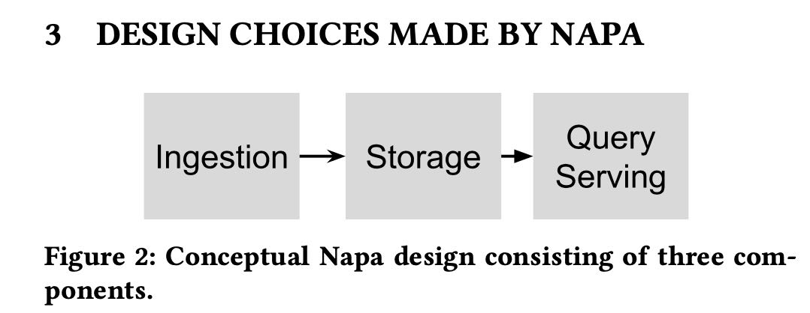

Napa: Powering Scalable Data Warehousing with Robust Query Performance at Google
Table of Contents
https://research.google/pubs/pub50617/
1. abstract
napa充分利用MV，可以让用户调节某些参数，在cost, query performance, data freshness三者之间进行选择。
MV的优势在于查询性能可以针对query pattern做的非常好，但是劣势在于存在data更新不及时的问题。如果要data freshness好的话，有两种办法： a. 更多的delta files, 牺牲查询性能 b. 更多的机器来做compaction, 牺牲成本。通过调节关键组件配置可以在三者之间进行平衡。
At its core, Napa’s principal technologies for robust query performance include the aggressive use of materialized views, which are maintained consistently as new data is ingested across multiple data centers. Our clients also demand flexibility in being able to adjust their query performance, data freshness, and costs to suit their unique needs. Robust query processing and flexible configuration of client databases are the hallmark of Napa design.
2. introduction
napa目标是替换mesa, 主要价值就是在flexibility上
Napa was built to replace Mesa [19, 20], an earlier Google system. Napa has been operational for multiple years now. It inherited many petabytes of historical data from Mesa and onboarded many new clients. While Mesa was built to serve a specific critical client with extreme latency requirements, Napa has a much broader mandate. We compare Mesa and Napa in the related work section; briefly, in contrast to Mesa, Napa was designed to be used Google-wide and to serve the diverse needs of many analytical applications. The following key aspects of Napa are the bedrock principles of its design and are aligned with our client requirements:
- [Robust Query Performance] 查询性能稳定
- [Flexibility] cost, qps, data freshness平衡
- [High-throughput Data Ingestion] 导入性能稳定
MV上还可以创建索引index. 不过好像文章没有说如何来创建MV，可能是需要手动指定。MV越多覆盖query越好，但是维护成本也越高。
Napa’s approach for robust query performance includes the aggressive use of materialized views, which are maintained consis- tently as new data is ingested across multiple data centers. This is in contrast to current trends in other systems that achieve perfor- mance by efficient scans of base data. Without indexed materialized views, delivering robust sub-second response times for the majority of our workloads is extremely difficult. The coverage of the materi- alized views for a query workload determines query performance, while the rate at which the views are refreshed affects freshness. Combined, varying how much of the workload is covered by views and how frequently they are refreshed provide levers by which clients can choose different cost/performance tradeoffs.
3. constraints
在costs, query performance, data freshness之间做balance. 这节文章还举了几个例子来说明如何进行调整。
Napa serves many applications in Google that differ in their re- quirements for three critical objectives (1) query performance, (2) data freshness, and (3) cost. The ideal, of course, is to achieve the highest query performance and highest data freshness at the lowest possible cost. We will use query performance and query latency interchangeably as for our purposes they are closely related (high performance implies low latency). Data freshness is measured by the time between when a row is added to a table to the time when it is available for querying. Freshness requirements range from a few minutes for freshness-sensitive clients to a couple of hours for cost-conscious clients. Costs are primarily machine resource costs that arise due to data processing – ingestion costs, background maintenance operations, and query execution. Typically, ingestion and maintenance costs dominate.
4. design choices
三个组件：
- ingestion. delta files写入到文件系统上，但是这个阶段并不是queryable的
- storage. delta files被更新到storage上(包括base tables/MVs) 完成之后就可以查询
- query serving. 目前使用的就是F1 query系统。

Napa’s high-level architecture consists of three main components as shown in the figure above.
- (1) Napa’s ingestion framework is responsible for committing updates into the tables. These updates are called deltas in Napa. The deltas written by the ingestion framework only serve to satisfy the durability requirements of the ingestion framework, and hence are write optimized. These deltas need to be further consolidated before they can be applied to tables and their associated views.
- (2) The storage framework incrementally applies the updates to tables and their views. Napa tables and their views are main- tained incrementally as log-structured merge-forests [25]. Thus, each table is a collection of updates. Deltas are con- stantly consolidated to form larger deltas; we call this pro- cess “compaction.” The view maintenance layer transforms table deltas into view deltas by applying the corresponding SQL transformation. The storage layer is also responsible for periodically compacting tables and views.
- (3) Query serving is responsible for answering client queries. The system performs merging of necessary deltas of the table (or view) at query time. Note that query latency is a function of the query time merge effort, so the faster the storage subsystem can process updates, the fewer deltas need to be merged at query time. F1 Query [27] is used as the query engine for data stored in Napa. We provide more details for query serving in Section 8.
可以看到将ingestion, storage(mv), query processing隔离开来，这样相互之间的影响就可以单独调整。
Napa decouples ingestion from view maintenance, and view maintenance from query processing. This decoupling provides clients knobs to meet their requirements, allowing tradeoffs among freshness, performance, and cost. Note that Napa requires the con- sistency of the base tables and the views, so decoupling is a subtle yet important design choice that ensures Napa can keep making progress regardless of the performance of the individual compo- nents. Ingestion depends only on initial run generation, i.e., com- mitting the updates, but not on merging or on view maintenance. Napa also provides clients with high level choices that translate to selectively indexing data and limits the amount of merging at query time
引入QT(queryable timestamp) 这个概念，大致意思就是目前有多少数据已经是进入了storage的，体现了data freshness. 在分布式架构下，每个table replicas可能有不同的QT. 对于一个table来说会需要取majority replicas QT作为整体table QT.
To that end, Napa introduces the concept called Queryable Times- tamp (QT) to provide clients with a live marker (just like an ad- vancing timestamp). QT is the direct indicator of freshness since [Now() - QT] indicates data delay. All data up to the QT timestamp can be queried by the client. Since QT can only be advanced when a required number of views have been generated with an upper- bound on the number of deltas, there is a guarantee that data used to serve query has met the conditions for delivering expected query performance. Furthermore, the continual advancement and staying within the freshness target of QT indicates the system is able to apply updates to the tables and views within the cost constraints specified in the database configuration.
在多副本管理上. metadata在每个data centers之间是强一致性的，但是query data在每个data centers之间是异步更新的。
Instead, Napa uses an approach in which it decouples the execution of data and metadata operations such that the data op- erations are executed asynchronously at each of the replicas at a data center and metadata operations are used periodically to ensure that the replicas remain synchronized with each other. In particular, relatively infrequent metadata operations use Spanner to ensure the mutual consistency of all the replicas. The orchestration of the synchronous and asynchronous mode of this highly distributed machinery is a key innovation in Napa. The queryable timestamp indicates a state at which all tables and views in a database are glob- ally consistent across all data centers. Even though compaction and view maintenance are carried out asynchronously at each replica, the system moves from one consistent state to another.
5. system arch
整个系统结构大致是这样的
- storage 使用的是 GFS(colossus)
- metadata 使用的是 spanner
- query serving 使用的是 F1 query
napa 在这个系统里面主要就是管理ingestion和compaction. 后面可以看到它有metadata server(来读取元数据)和delta server(+caching layer来读取数据)
6. ingestion
数据文件进来的时候可能适合查询，ingestion server需要做些处理(必要的compaction)并且replicates to servers. 然后才能更新metadata server让查询可见。
First, the goal of the ingestion framework is to accept data, perform minimal processing, and make it durable without considering the pace of subsequent view maintenance. All ingested rows are assigned a metadata timestamp for ordering, and then marked as committed after other durability conditions, such as replication, have been satisfied. Second, the ingestion framework provides knobs to limit the peak machine costs by allowing config- urations to increase or decrease the numbers of tasks that accept data and perform the ingestion work of batching, aggregating, and replicating.
Clients deliver the data to be ingested to any one of the Napa replicas and it is Napa’s responsibility to ensure that the data is ingested at all the replicas to ensure availability. The ingestion framework produces write-optimized deltas, in that they are small and their physical sizes are limited by the memory buffer of servers. These deltas are not immediately available for querying since there are many of these deltas, which will slow down query serving because it has to merge them. We refer to these deltas as unqueryable and require that they be compacted before they can be queried.
7. queryable timestamp
8. maintain mv at scale
维护MV在sort/merge算子上开销比较大
Thus, we spent considerable engineering effort in developing a state-of- the-art sort library for Napa. The same library is employed across all Napa components that sort data– from the ingestion servers to the sort operators in F1 Query. The principal techniques in our sorting and merging library are based on prior literature (e.g., [15, 22, 23]): normalized keys for efficient comparisons, poor man’s normalized keys [15] for cache efficiency, tree-of-losers priority queues [23] for a minimal comparison count, and offset-value coding [22] for caching partial comparisons. The key accomplishment has been to implement these known techniques, tune the algorithms, and deploy the library for Google-scale processing.
9. robust query performance
整个query流程如下
- metadata serer + delta server 是 napa 部分
- metadata server 用的是 F1 spanner
- distributed cache 可以加速读取数据部分
- napa index / deltas 可以认为是base table + mv 在colossus上
在改进query性能方面有这些工作
- 通过B-tree napa index来减少数据读取
- data cache + prefetching IO
- combinging small IOs(可以合并并发请求的IO，以及单个请求中多个columns IO)
- continuation of tails and failures(请求会返回continuation token, 这个token可以去其他服务器继续访问)
在线和离线prefetching. 在线的prefeching可以增加shadow query executor, 它只加载数据不进行计算
Therefore, Napa performs offline and on- line prefetching to further reduce the number of sequential I/Os in the critical path. Offline prefetching occurs as soon as data is ingested for frequently queried tables, before QT advances to make the new data available to query. Online prefetching starts when a query arrives and is performed by a shadow query executor which shares the data access pattern with the main query executor but skips all query processing steps. Since the shadow query executor skips processing, it runs ahead of the main query executor, achiev- ing the effect of more accurate prefetching than disk readahead based on past accesses.
拿着continuation token可以去其他服务器访问(包括跨机房)
For a streaming RPC, such as the RPC between F1 worker and Delta Server, Napa estimates its expected progress rate and requires the server executing it periodically to report progress, together with a continuation token. If the reported progress is below expectation or the report is missing, the last continuation token would be used to restart a new streaming RPC on a different server without losing progress. Pushdown operators like filtering and partial aggrega- tion need to be carefully handled in progress reporting as they can significantly reduce the data size, causing progress reports to be superficially low or even missing. Napa uses bytes processed before filtering and partial aggregation as the progress rate metric and periodically forces these operators to flushes its internal state to generate a progress report with a continuation token.
For datacenter-wide issues which impact query serving but not ingestion, the above tail tolerance mechanisms would kick in and automatically reroute the queries to servers in a neighboring data center. When ingestion is impacted, datacenter-local QT is delayed in affected data centers and the query would be directly routed to other data centers based on the local QT values.
10. related work
这有一节讲到了历史上google analytics systems
- tenzing 用MR分析gfs/bigtable上数据
- procella 在dremel上改进存储格式
- napa 最开始是用sharded mysql访问，后面将存储和计算分离。存储合并入mesa, 计算合入f1 query.
Data analytics within Google An early attempt at building a large scale data management system at Google was Tenzing [6], which offered SQL over Map-Reduce [10] on data stored in Colos- sus [12, 14] and Bigtable [4]. Dremel [24] is a scan-based querying system that enabled large-scale querying of Google’s log data using thousands of machines. Procella [5] is a recent scan-based system that improves upon Dremel by using advanced storage format to support filter expressions, zone maps, bitmaps, bloom filters, and partitions and sorting by keys. In contrast to these prior systems, Napa is a fully indexed system that is optimized for key lookups, range scans, and efficient incremental maintenance of indexes on tables and views. Napa can easily support both adhoc queries and highly selective and less diverse queries. Early systems used sharded MySQL, which over time forked into two systems. The data layer forked off into Mesa [19, 20], while the query layer became F1 Query [27, 29].